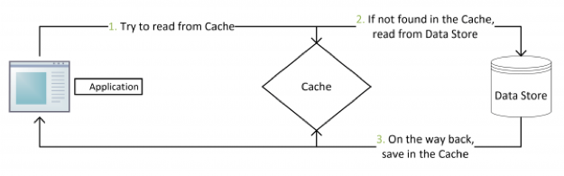
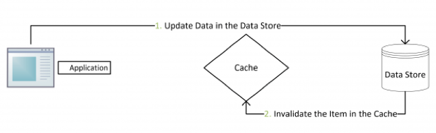
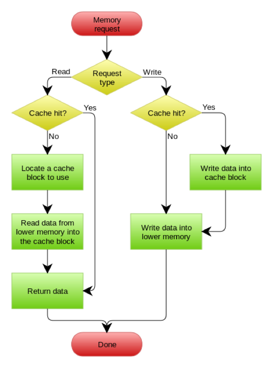
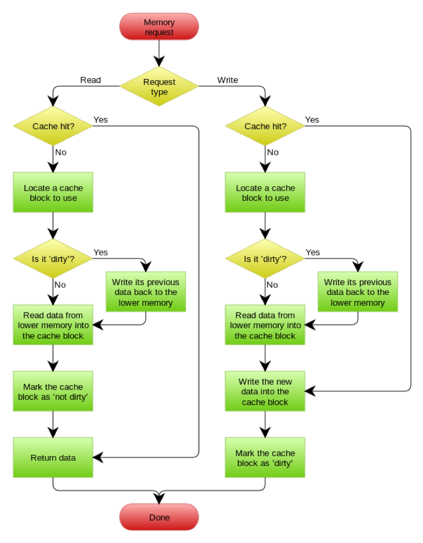

- 000 开篇词 洞悉技术的本质，享受科技的乐趣.md.html
- 001 程序员如何用技术变现（上）.md.html
- 002 程序员如何用技术变现（下）.md.html
- 003 Equifax信息泄露始末.md.html
- 004 从Equifax信息泄露看数据安全.md.html
- 005 何为技术领导力.md.html
- 006 如何拥有技术领导力.md.html
- 007 推荐阅读：每个程序员都该知道的事.md.html
- 008 Go语言，Docker和新技术.md.html
- 009 答疑解惑：渴望、热情和选择.md.html
- 010 如何成为一个大家愿意追随的Leader？.md.html
- 011 程序中的错误处理：错误返回码和异常捕捉.md.html
- 012 程序中的错误处理：异步编程和最佳实践.md.html
- 013 魔数 0x5f3759df.md.html
- 014 推荐阅读：机器学习101.md.html
- 015 时间管理：同扭曲时间的事儿抗争.md.html
- 016 时间管理：投资赚取时间.md.html
- 017 故障处理最佳实践：应对故障.md.html
- 018 故障处理最佳实践：故障改进.md.html
- 019 答疑解惑：我们应该能够识别的表象和本质.md.html
- 020 分布式系统架构的冰与火.md.html
- 021 从亚马逊的实践，谈分布式系统的难点.md.html
- 022 分布式系统的技术栈.md.html
- 023 分布式系统关键技术：全栈监控.md.html
- 024 分布式系统关键技术：服务调度.md.html
- 025 分布式系统关键技术：流量与数据调度.md.html
- 026 洞悉PaaS平台的本质.md.html
- 027 推荐阅读：分布式系统架构经典资料.md.html
- 028 编程范式游记（1）- 起源.md.html
- 029 编程范式游记（2）- 泛型编程.md.html
- 030 编程范式游记（3） - 类型系统和泛型的本质.md.html
- 031 Git协同工作流，你该怎样选.md.html
- 032 推荐阅读：分布式数据调度相关论文.md.html
- 033 编程范式游记（4）- 函数式编程.md.html
- 034 编程范式游记（5）- 修饰器模式.md.html
- 035 编程范式游记（6）- 面向对象编程.md.html
- 036 编程范式游记（7）- 基于原型的编程范式.md.html
- 037 编程范式游记（8）- Go 语言的委托模式.md.html
- 038 编程范式游记（9）- 编程的本质.md.html
- 039 编程范式游记（10）- 逻辑编程范式.md.html
- 040 编程范式游记（11）- 程序世界里的编程范式.md.html
- 041 弹力设计篇之“认识故障和弹力设计”.md.html
- 042 弹力设计篇之“隔离设计”.md.html
- 043 弹力设计篇之“异步通讯设计”.md.html
- 044 弹力设计篇之“幂等性设计”.md.html
- 045 弹力设计篇之“服务的状态”.md.html
- 046 弹力设计篇之“补偿事务”.md.html
- 047 弹力设计篇之“重试设计”.md.html
- 048 弹力设计篇之“熔断设计”.md.html
- 049 弹力设计篇之“限流设计”.md.html
- 050 弹力设计篇之“降级设计”.md.html
- 051 弹力设计篇之“弹力设计总结”.md.html
- 052 区块链技术 - 区块链的革命性及技术概要.md.html
- 053 区块链技术 - 区块链技术细节 - 哈希算法.md.html
- 054 区块链技术 - 区块链技术细节 - 加密和挖矿.md.html
- 055 区块链技术 - 去中心化的共识机制.md.html
- 056 区块链技术 - 智能合约.md.html
- 057 区块链技术 - 传统金融和虚拟货币.md.html
- 058 管理设计篇之分布式锁.md.html
- 059 管理设计篇之配置中心.md.html
- 060 管理设计篇之边车模式.md.html
- 061 管理设计篇之服务网格.md.html
- 062 管理设计篇之网关模式.md.html
- 063 管理设计篇之部署升级策略.md.html
- 064 性能设计篇之缓存.md.html
- 065 性能设计篇之异步处理.md.html
- 066 性能设计篇之数据库扩展.md.html
- 067 性能设计篇之秒杀.md.html
- 068 性能设计篇之边缘计算.md.html
- 069 程序员练级攻略（2018）：开篇词.md.html
- 070 程序员练级攻略（2018）：零基础启蒙.md.html
- 071 程序员练级攻略（2018）：正式入门.md.html
- 072 程序员练级攻略（2018）：程序员修养.md.html
- 073 程序员练级攻略（2018）：编程语言.md.html
- 074 程序员练级攻略：理论学科.md.html
- 075 程序员练级攻略（2018）：系统知识.md.html
- 076 程序员练级攻略（2018）：软件设计.md.html
- 077 程序员练级攻略（2018）：Linux系统、内存和网络.md.html
- 078 程序员练级攻略（2018）：异步IO模型和Lock-Free编程.md.html
- 079 程序员练级攻略（2018）：Java底层知识.md.html
- 080 程序员练级攻略（2018）：数据库.md.html
- 081 程序员练级攻略（2018）：分布式架构入门.md.html
- 082 程序员练级攻略（2018）：分布式架构经典图书和论文.md.html
- 083 程序员练级攻略（2018）：分布式架构工程设计.md.html
- 084 程序员练级攻略（2018）：微服务.md.html
- 085 程序员练级攻略（2018）：容器化和自动化运维.md.html
- 086 程序员练级攻略（2018）：机器学习和人工智能.md.html
- 087 程序员练级攻略（2018）：前端基础和底层原理.md.html
- 088 程序员练级攻略（2018）：前端性能优化和框架.md.html
- 089 程序员练级攻略（2018）：UIUX设计.md.html
- 090 程序员练级攻略（2018）：技术资源集散地.md.html
- 091 程序员面试攻略：面试前的准备.md.html
- 092 程序员面试攻略：面试中的技巧.md.html
- 093 程序员面试攻略：面试风格.md.html
- 094 程序员面试攻略：实力才是王中王.md.html
- 095 高效学习：端正学习态度.md.html
- 096 高效学习：源头、原理和知识地图.md.html
- 097 高效学习：深度，归纳和坚持实践.md.html
- 098 高效学习：如何学习和阅读代码.md.html
- 099 高效学习：面对枯燥和量大的知识.md.html
- 100 高效沟通：Talk和Code同等重要.md.html
- 101 高效沟通：沟通阻碍和应对方法.md.html
- 102 高效沟通：沟通方式及技巧.md.html
- 103 高效沟通：沟通技术.md.html
- 104 高效沟通：好老板要善于提问.md.html
- 105 高效沟通：好好说话的艺术.md.html
- 106 加餐 谈谈我的“三观”.md.html
- 107 结束语 业精于勤，行成于思.md.html
064 性能设计篇之缓存
前面分享了《分布式系统设计模式》系列文章的前两部分——弹力设计篇和管理设计篇。今天开始这一系列的最后一部分内容——性能设计篇，主题为《性能设计篇之 " 缓存 "》。
基本上来说，在分布式系统中最耗性能的地方就是最后端的数据库了。一般来说，只要小心维护好，数据库四种操作（select、update、insert 和 delete）中的三个写操作 insert、update 和 delete 不太会出现性能问题（insert 一般不会有性能问题，update 和 delete 一般会有主键，所以也不会太慢）。除非索引建得太多，而数据库里的数据又太多，这三个操作才会变慢。
绝大多数情况下，select 是出现性能问题最大的地方。一方面，select 会有很多像 join、group、order、like 等这样丰富的语义，而这些语义是非常耗性能的；另一方面，大多数应用都是读多写少，所以加剧了慢查询的问题。
分布式系统中远程调用也会耗很多性能，因为有网络开销，会导致整体的响应时间下降。为了挽救这样的性能开销，在业务允许的情况（不需要太实时的数据）下，使用缓存是非常必要的事情。
从另一个方面说，缓存在今天的移动互联网中是必不可少的一部分，因为网络质量不总是最好的，所以前端也会为所有的 API 加上缓存。不然，网络不通畅的时候，没有数据，前端都不知道怎么展示 UI 了。既然因为移动互联网的网络质量而导致我们必需容忍数据的不实时性，那么，从业务上来说，在大多数情况下是可以使用缓存的。
缓存是提高性能最好的方式，一般来说，缓存有以下三种模式。
Cache Aside 更新模式
这是最常用的设计模式了，其具体逻辑如下。
- 失效：应用程序先从 cache 取数据，没有得到，则从数据库中取数据，成功后，放到缓存中。
- 命中：应用程序从 cache 中取数据，取到后返回。
- 更新：先把数据存到数据库中，成功后，再让缓存失效。


这是标准的设计模式，包括 Facebook 的论文《Scaling Memcache at Facebook》中也使用了这个策略。为什么不是写完数据库后更新缓存？你可以看一下 Quora 上的这个问答《Why does Facebook use delete to remove the key-value pair in Memcached instead of updating the Memcached during write request to the backend?》，主要是怕两个并发的写操作导致脏数据。
那么，是不是这个 Cache Aside 就不会有并发问题了？不是的。比如，一个是读操作，但是没有命中缓存，就会到数据库中取数据。而此时来了一个写操作，写完数据库后，让缓存失效，然后之前的那个读操作再把老的数据放进去，所以会造成脏数据。
这个案例理论上会出现，但实际上出现的概率可能非常低，因为这个条件需要发生在读缓存时缓存失效，而且有一个并发的写操作。实际上数据库的写操作会比读操作慢得多，而且还要锁表，而读操作必需在写操作前进入数据库操作，又要晚于写操作更新缓存，所有这些条件都具备的概率并不大。
所以，这也就是 Quora 上的那个答案里说的，要么通过 2PC 或是 Paxos 协议保证一致性，要么就是拼命地降低并发时脏数据的概率。而 Facebook 使用了这个降低概率的玩法，因为 2PC 太慢，而 Paxos 太复杂。当然，最好还是为缓存设置好过期时间。
Read/Write Through 更新模式
我们可以看到，在上面的 Cache Aside 套路中，应用代码需要维护两个数据存储，一个是缓存（cache），一个是数据库（repository）。所以，应用程序比较啰嗦。而 Read/Write Through 套路是把更新数据库（repository）的操作由缓存自己代理了，所以，对于应用层来说，就简单很多了。可以理解为，应用认为后端就是一个单一的存储，而存储自己维护自己的 Cache。
Read Through
Read Through 套路就是在查询操作中更新缓存，也就是说，当缓存失效的时候（过期或 LRU 换出），Cache Aside 是由调用方负责把数据加载入缓存，而 Read Through 则用缓存服务自己来加载，从而对应用方是透明的。
Write Through
Write Through 套路和 Read Through 相仿，不过是在更新数据时发生。当有数据更新的时候，如果没有命中缓存，直接更新数据库，然后返回。如果命中了缓存，则更新缓存，然后由 Cache 自己更新数据库（这是一个同步操作）。
下图自来 Wikipedia 的 [Cache 词条](http://localhost:8080/01 左耳听风/html版本/">https://en.wikipedia.org/wiki/Cache_(computing) 。其中的 Memory，你可以理解为就是我们例子里的数据库。

Write Behind Caching 更新模式
Write Behind 又叫 Write Back。一些了解 Linux 操作系统内核的同学对 write back 应该非常熟悉，这不就是 Linux 文件系统的 page cache 算法吗？是的，你看基础知识全都是相通的。所以，基础很重要，我已经说过不止一次了。
Write Back 套路就是，在更新数据的时候，只更新缓存，不更新数据库，而我们的缓存会异步地批量更新数据库。这个设计的好处就是让数据的 I/O 操作飞快无比（因为直接操作内存嘛）。因为异步，Write Back 还可以合并对同一个数据的多次操作，所以性能的提高是相当可观的。
但其带来的问题是，数据不是强一致性的，而且可能会丢失（我们知道 Unix/Linux 非正常关机会导致数据丢失，就是因为这个事）。在软件设计上，我们基本上不可能做出一个没有缺陷的设计，就像算法设计中的时间换空间、空间换时间一个道理。有时候，强一致性和高性能，高可用和高性能是有冲突的。软件设计从来都是 trade-off（取舍）。
另外，Write Back 实现逻辑比较复杂，因为它需要 track 有哪些数据是被更新了的，需要刷到持久层上。操作系统的 Write Back 会在仅当这个 cache 需要失效的时候，才会把它真正持久起来。比如，内存不够了，或是进程退出了等情况，这又叫 lazy write。
在 Wikipedia 上有一张 Write Back 的流程图，基本逻辑可以在下图中看到。

缓存设计的重点
缓存更新的模式基本如前面所说，不过这还没完，缓存已经成为高并发高性能架构的一个关键组件了。现在，很多公司都在用 Redis 来搭建他们的缓存系统。一方面是因为 Redis 的数据结构比较丰富。另一方面，我们不能在 Service 内放 local cache，一是每台机器的内存不够大，二是我们的 Service 有多个实例，负载均衡器会把请求随机分布到不同的实例。缓存需要在所有的 Service 实例上都建好，这让我们的 Service 有了状态，更难管理了。
所以，在分布式架构下，一般都需要一个外部的缓存集群。关于这个缓存集群，你需要保证的是内存要足够大，网络带宽也要好，因为缓存本质上是个内存和 IO 密集型的应用。
另外，如果需要内存很大，那么你还要动用数据分片技术来把不同的缓存分布到不同的机器上。这样，可以保证我们的缓存集群可以不断地 scale 下去。关于数据分片的事，我会在后面讲述。
缓存的好坏要看命中率。缓存的命中率高说明缓存有效，一般来说命中率到 80% 以上就算很高了。当然，有的网络为了追求更高的性能，要做到 95% 以上，甚至可能会把数据库里的数据几乎全部装进缓存中。这当然是不必要的，也是没有效率的，因为通常来说，热点数据只会是少数。
另外，缓存是通过牺牲强一致性来提高性能的，这世上任何事情都不是免费的，所以并不是所有的业务都适合用缓存，这需要在设计的时候仔细调研好需求。使用缓存提高性能，就是会有数据更新的延迟。
缓存数据的时间周期也需要好好设计，太长太短都不好，过期期限不宜太短，因为可能导致应用程序不断从数据存储检索数据并将其添加到缓存。同样，过期期限不宜太长，因为这会导致一些没人访问的数据还在内存中不过期，而浪费内存。
使用缓存的时候，一般会使用 LRU 策略。也就是说，当内存不够需要有数据被清出内存时，会找最不活跃的数据清除。所谓最不活跃的意思是最长时间没有被访问过了。所以，开启 LRU 策略会让缓存在每个数据访问的时候把其调到前面，而要淘汰数据时，就从最后面开始淘汰。
于是，对于 LRU 的缓存系统来说，其需要在 key-value 这样的非顺序的数据结构中维护一个顺序的数据结构，并在读缓存时，需要改变被访问数据在顺序结构中的排位。于是，我们的 LRU 在读写时都需要加锁（除非是单线程无并发），因此 LRU 可能会导致更慢的缓存存取的时间。这点要小心。
最后，我们的世界是比较复杂的，很多网站都会被爬虫爬，要小心这些爬虫。因为这些爬虫可能会爬到一些很古老的数据，而程序会把这些数据加入到缓存中去，而导致缓存中那些真实的热点数据被挤出去（因为机器的速度足够快）。对此，一般来说，我们需要有一个爬虫保护机制，或是我们引导这些人去使用我们提供的外部 API。在那边，我们可以有针对性地做多租户的缓存系统（也就是说，把用户和第三方开发者的缓存系统分离开来）。
小结
好了，我们来总结一下今天分享的主要内容。首先，缓存是为了加速数据访问，在数据库之上添加的一层机制。然后，我讲了几种典型的缓存模式，包括 Cache Aside、Read/Write Through 和 Write Behind Caching 以及它们各自的优缺点。
最后，我介绍了缓存设计的重点，除了性能之外，在分布式架构下和公网环境下，对缓存集群、一致性、LRU 的锁竞争、爬虫等多方面都需要考虑。下篇文章中，我们讲述异步处理。希望对你有帮助。
也欢迎你分享一下你接触到的缓存方式有哪些？怎样权衡一致性和缓存的效率？